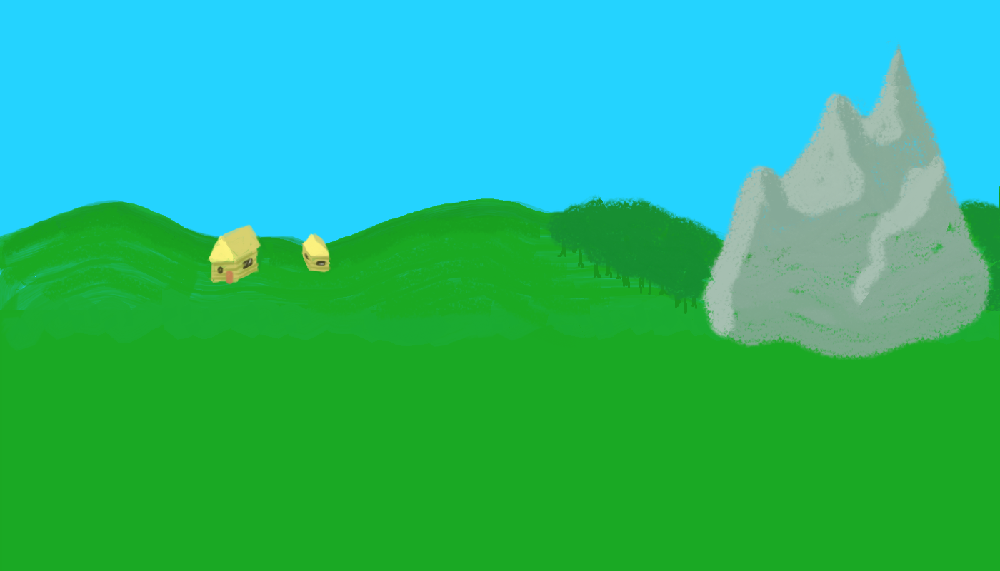
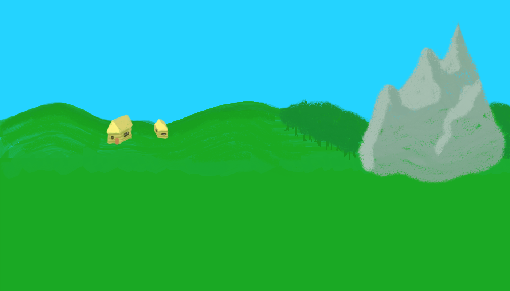
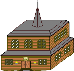
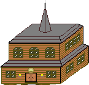
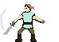
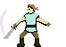
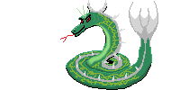
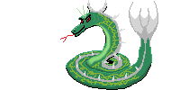

 



 



 

But most importantly, he appears to be a small boar. And his trusty friend and steed is a phlegmatic rat by the name of Sallinger.
The world they dwelled in was very unusual. To the point that there was barely any concept of money/goods relationship developed. Instead creatures native to this world had a clear sense of "karma".
It would take a few books to explain what karma means for this world. Suffice it to say that it's the essence of free will and the instrument of choice. It is in everything meaningful one does, and it is the key to fulfilling one's desires.
There is nothing wrong with wanting to get rich with karma, now is it? Especially when there is no easy way about it. Or is there?..
And so Dominique wishes to choose the destiny of a hero - a typical desire for someone like him. But such a path is not easily attained. And for this reason he leaves his home of Hogville and sets out on a journey to perform a feat worthy of earning him the title of "hero".
As he arrives to a mysterious land, he looks around to find those in need. Guide Dominique on his quest for justice and karma!
Navigate the landscape, fight enemies for experience and visit different places for special effects.
W, S or arrows up and down - move farther/nearer; choose a menu item. Moving between paths consumes stamina, so choose your path carefully.
Space or Enter - confirm/action.
Press ACTION to start your joruney.
Но что самое главное, он - маленький кабан. А его верный друг - и боевой конь - флегматичная крыса по имени Сэллинджер.
Мир, в котором они жили, крайне необычен. До такой степени, что в нём едва ли существовало понятие товарно-денежных отношений. Вместо этого у его жителей было развито ощущение "кармы".
Потребуется несколько книг, чтобы объяснить, что же карма значит для этого мира. Достаточно будет сказать, что это сущность свободной воли и инструмент осуществления выбора. Она есть во всех осмысленных деяниях, и она есть ключ к исполнению чьих-либо желаний.
Нет ничего плохого в том, чтобы хотеть быть богатым кармой, правда ведь? Особенно, когда к этому богатству лёгких путей нет. Или всё-таки есть?..
И вот, Доминик желает избрать судьбу героя - типичное желание для такого, как он. Но выйти на подобную стезю непросто. И как раз для этого он покидает свой дом в Хогвилле и отправляется в путешествие, чтобы совершить подвиг, достойный звания "героя".
Прибыв в незнакомую загадочную страну, он оглядывается в поисках нуждающихся в его услугах.
Помогите Доминику в его поисках правосудия и кармы!
Перемещайтесь по местности, сражайтесь с врагами, чтобы получать опыт, и посещайте различные места для активации особых эффектов.
W, S или стрелки вверх и вниз - перемещение дальше/ближе; выбор пункта меню. Перемещение между тропами стоит выносливости, так что осторожно выбирайте свой путь.
Пробел или Enter - подтверждение/действие.
Нажмите ДЕЙСТВИЕ, чтобы начать путешествие.